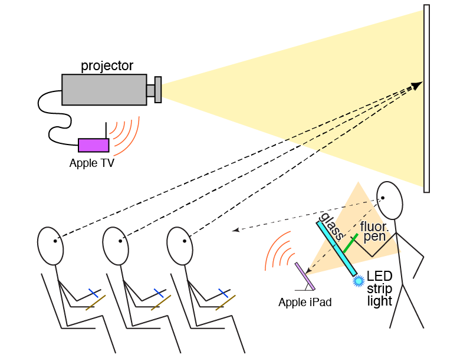

Big Screen II is an iOS app that transmits, and optionally records, live video from the camera to a second screen connected by AirPlay. The controls are not mirrored to the second screen.
DIY document camera instructions for videoconferencing lectures and office hours from home.
Big Screen II is part of a digital whiteboard developed in the Hines Lab in the Dept. of Chemistry and Chemical Biology at Cornell University. The whiteboard is sketched below. The lecturer faces the classroom and writes on a sheet of illuminated glass with a fluorescent pen. The front-facing camera on the iPad behind the glass captures a video of the lecturer and his/her drawings and writing. Because the front camera flips the image horizontally, the lecturer’s writing is not reversed. Unlike a traditional white board, the lecturer cannot obstruct the writing. A full description of the whiteboard is given in E. S. Skibinski, W. J. I. DeBenedetti, A. G. Ortoll-Bloch, and M. A. Hines, “A Blackboard for the 21st Century: An Inexpensive Light Board Projection System for Classroom Use,” J. Chem. Educ. 92, 1754 (2015).

Instructions for constructing the digital whiteboard can be downloaded here.
A big thanks is due to Kirby Turner of White Peak Software, Inc. who wrote the original Big Screen and who graciously shared his source code. Big Screen II is a de novo rewrite of Big Screen with added videorecording capability. All bugs are mine.
Development of the digital whiteboard was supported by the National Science Foundation under Award CHE-1708025.
© 2020 Melissa A. Hines
Please send questions, comments, and bug reports to Melissa.Hines@cornell.edu
Available on GitHub